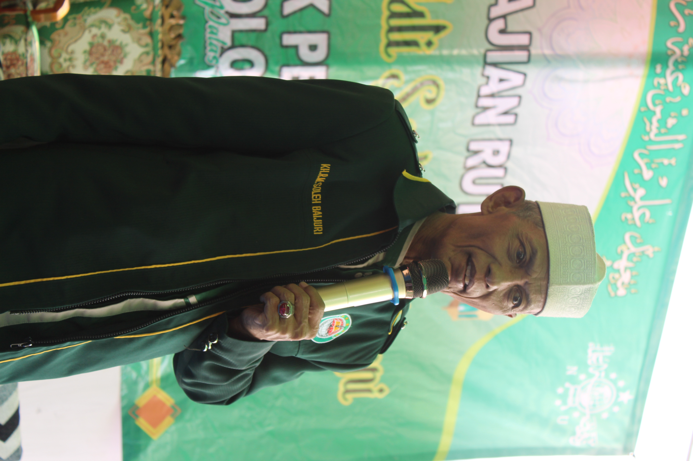
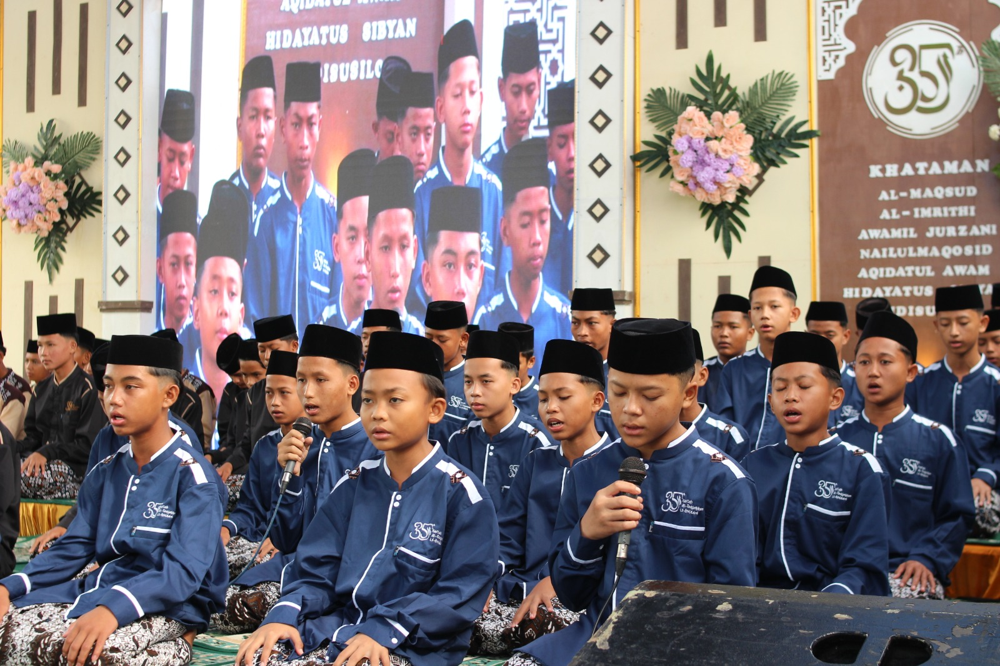
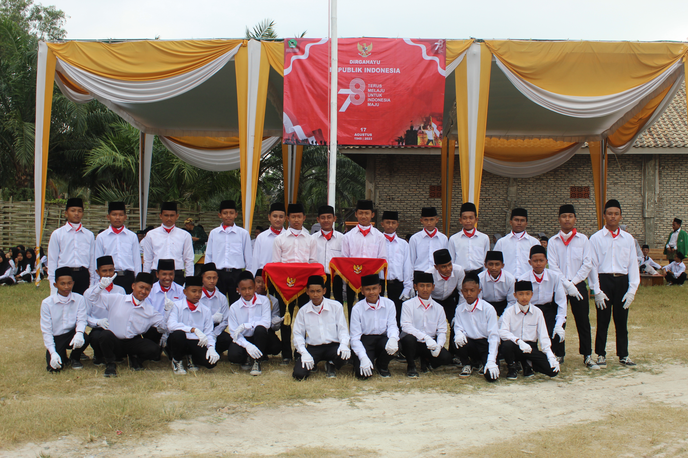
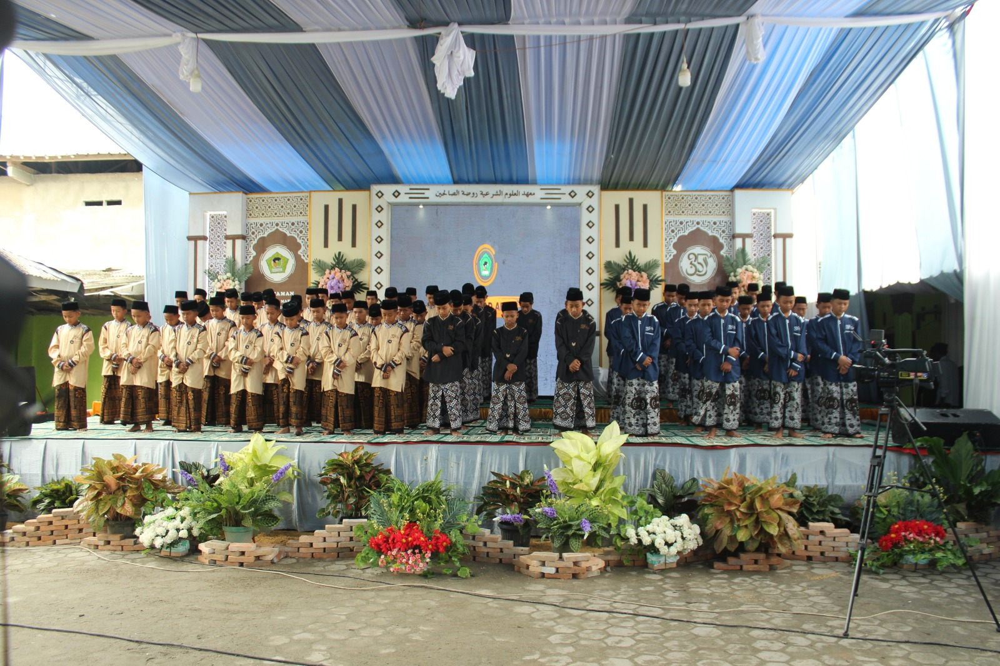
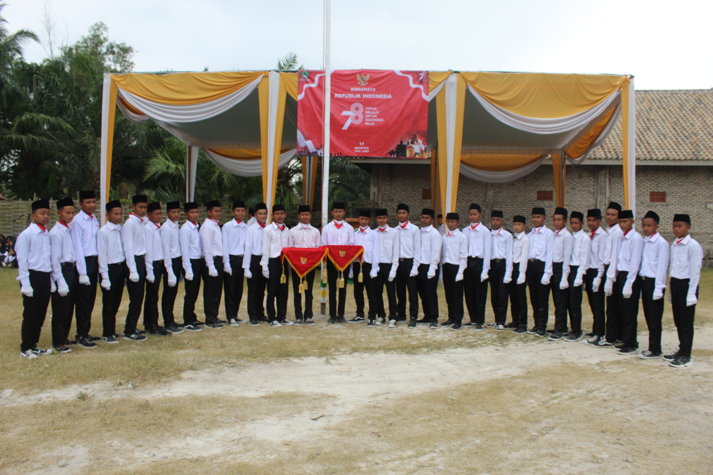
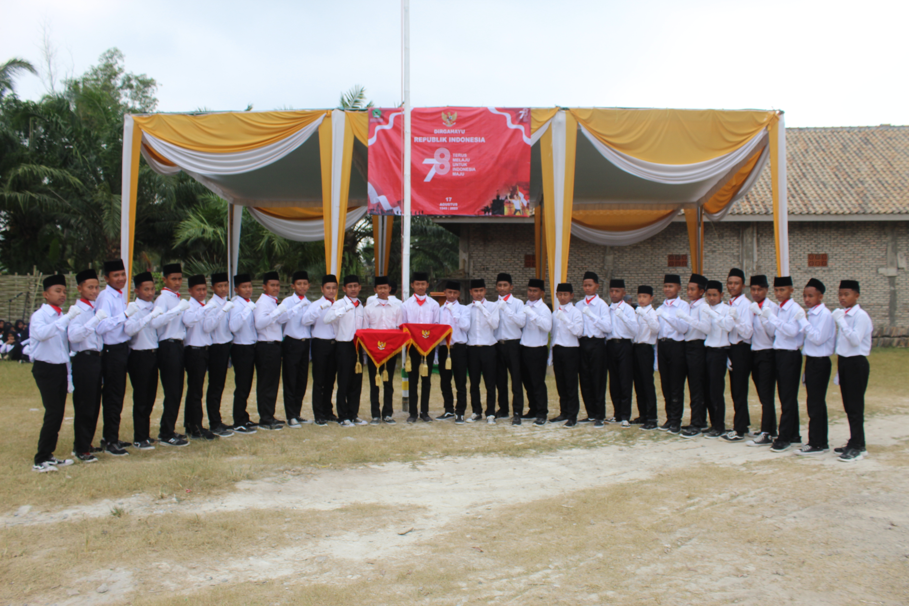
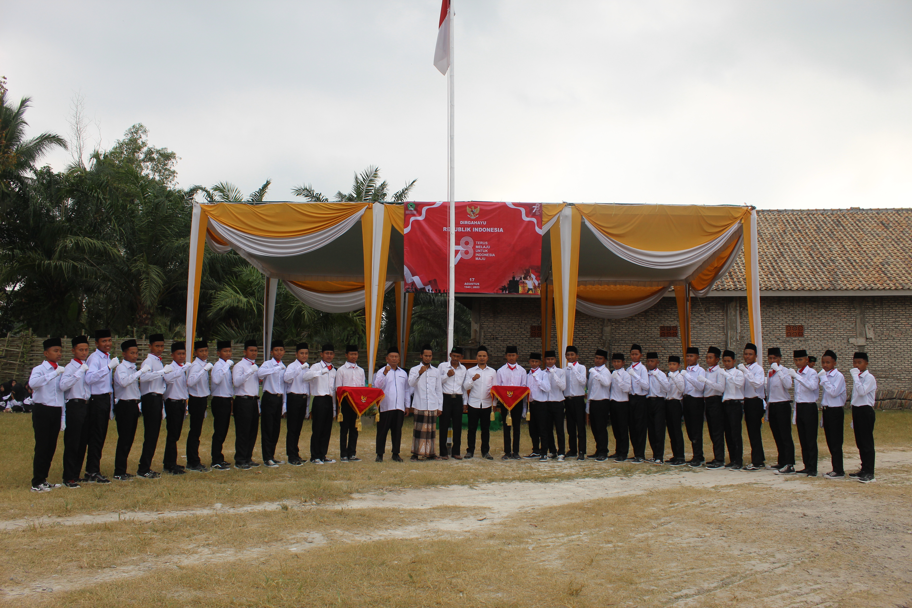

Manasik Haji Cilik
Siswa RA Al-Qur'an Roudlotussolihin mengikuti kegiatan manasik haji untuk mengenal rukun Islam sejak dini.
Baca Selengkapnya →
Pendidikan Anak Usia Dini Berbasis Nilai-Nilai Al-Qur'an dan Karakter.
Daftar Sekarang!Pemimpin dan Penggerak Pendidikan

Selamat datang di website resmi RA Al-Qur'an Roudlotussolihin[cite: 2]. Kami berkomitmen untuk menanamkan nilai-nilai keislaman dan kecintaan pada Al-Qur'an sejak usia dini.
Melalui metode pembelajaran yang kreatif, menyenangkan, dan interaktif, kami mendampingi tumbuh kembang anak secara optimal.
SelengkapnyaData dan pencapaian sekolah kami
Siswa Aktif
Tenaga Pendidik
Ruang Kelas
Prestasi
Mengenal lebih dekat sekolah kami

RA Al-Qur'an Roudlotussolihin hadir untuk memberikan fondasi pendidikan karakter dan keagamaan yang kokoh sejak usia dini.
Dengan lingkungan yang aman, nyaman, dan edukatif, anak-anak diajak belajar sambil bermain untuk mengoptimalkan potensinya.

Menjadi lembaga pendidikan anak usia dini unggulan yang menanamkan nilai-nilai Al-Qur'an dan budi pekerti luhur.
Mengembangkan kecerdasan emosional, spiritual, dan motorik anak melalui pendekatan yang penuh kasih sayang.
Pengenalan dan hafalan surat-surat pendek pilihan.
Pembiasaan doa harian dan adab Islami sehari-hari.
Stimulasi tumbuh kembang anak lewat seni dan permainan edukatif.
Dapatkan informasi terbaru mengenai kegiatan, prestasi, dan pengumuman dari sekolah kami.
Siswa RA Al-Qur'an Roudlotussolihin mengikuti kegiatan manasik haji untuk mengenal rukun Islam sejak dini.
Baca Selengkapnya →
Berbagai perlombaan ceria antar kelas untuk melatih keberanian dan kreativitas anak-anak.
Baca Selengkapnya →
Acara pelepasan siswa-siswi berlangsung penuh haru dan keceriaan bersama para orang tua.
Baca Selengkapnya →
Mari bergabung bersama RA Al-Qur'an Roudlotussolihin untuk mencetak generasi Qurani sejak dini.
Baca Selengkapnya →


Jl. KH. Bysri Mustofa No. 18, Desa Bumirestu, Kec. Palas, Kab. Lampung Selatan
yppproudlotussolihin@gmail.com
0821-8004-8861
0821-8004-8861